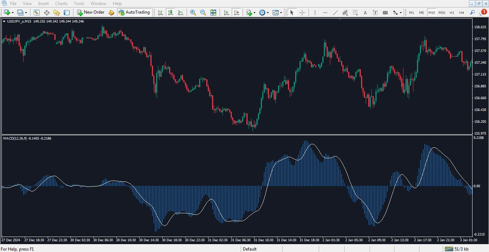

متاتریدر یک نرمافزار معاملاتی محبوب برای تحلیل بازارهای مالی، مشاهده نمودارها، استفاده از اندیکاتورها و اجرای سفارشات خرید و فروش است. این نرمافزار توسط شرکت MetaQuotes ساخته شده و به صورت رایگان برای استفاده عموم در دسترس قرار دارد.
متاتریدر 4 بیشتر در بازار فارکس کاربرد دارد و به دلیل سادگی و سبک بودن هنوز هم محبوب است. متاتریدر 5 امکانات بیشتری برای تحلیل سهام و بازارهای آتی دارد و از نظر فنی ساختار پیشرفتهتری دارد.
به دلیل رابط کاربری ساده، پشتیبانی از اندیکاتورهای متنوع، توانایی اتصال به حسابهای واقعی و دمو، و پشتیبانی از رباتهای معاملاتی، متاتریدر یکی از بهترین گزینهها برای ترید در بازارهای مالی است.
در این بخش مراحل نصب متاتریدر را با تصویر مشاهده میکنید: